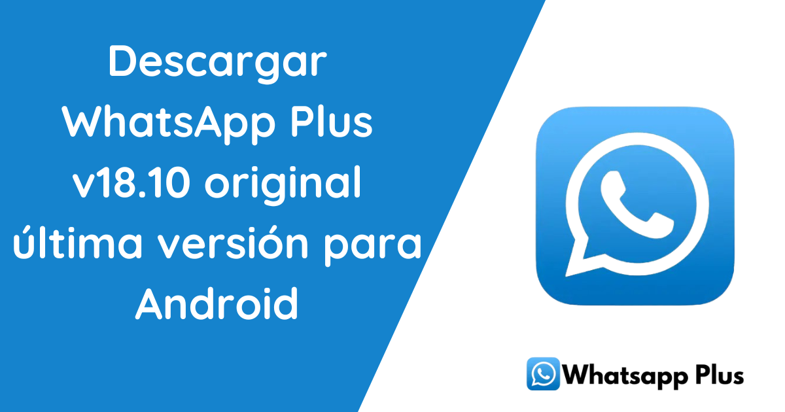

Si te gusta WhatsApp pero sientes que le falta algo o simplemente quieres personalizar tu experiencia de mensajería, déjame decirte que existe una versión mejorada: WhatsApp Plus Blue. ¡Sí, así como lo oyes! Puedes descargar WhatsApp Plus Blue APK y acceder a una serie de características que no encontrarás en la versión simple de WhatsApp.
Ahora, antes de que te emociones demasiado y corras a descargarlo, hablemos de qué es realmente WhatsApp Plus, por qué tantas personas lo prefieren, y cómo puede mejorar tu vida (o al menos tu experiencia de chateo). Y claro, te contaré cómo descargar la última versión del APK de WhatsApp Plus Blue para Android. ¡Prepárate, porque esto va a ser bueno!
Primero lo primero, para aquellos que se están preguntando: ¿Qué demonios es WhatsApp Plus? Bueno, no es más que una versión modificada (mod) de WhatsApp original, creada por desarrolladores externos. Mientras que WhatsApp es bastante básico (¡y no me malinterpretes, funciona genial para lo esencial!), WhatsApp Plus viene con una serie de características adicionales que lo hacen muy atractivo para aquellos que buscan algo más de flexibilidad y personalización.
Esta app te permite hacer cosas que WhatsApp oficial ni sueña ofrecer, como cambiar la interfaz de usuario, ocultar ciertas opciones, modificar colores, y hasta controlar tu privacidad de manera más detallada. ¿Suena tentador, verdad? Pero antes de entrar en detalles más técnicos, quiero que recuerdes que, aunque suene genial, WhatsApp Plus no está respaldado oficialmente por WhatsApp, lo que significa que puede haber algunos riesgos, pero hablaremos de eso más adelante. Vamos paso por paso, no te asustes.
Vamos a desglosar algunas de las principales características para que puedas entender por qué tantas personas optan por esta versión.
Si eres de esas personas que sienten que el verde de WhatsApp ya te tiene harto o simplemente quieres que tu app se vea más "cool", WhatsApp Plus te da la libertad de personalizar la interfaz como quieras. Puedes cambiar el color de los chats, las fuentes, los iconos de las notificaciones, ¡todo! Básicamente, puedes convertir tu WhatsApp en una obra de arte (o un desastre, dependiendo de tus habilidades de diseño).
¿Alguna vez quisiste ocultar tu estado en línea o impedir que la gente sepa cuándo leíste sus mensajes? WhatsApp Plus te lo pone fácil. Puedes ocultar la última vez que estuviste en línea, bloquear la confirmación de lectura (sí, esos malditos ticks azules) y hasta ocultar el estado de “escribiendo”.
Con WhatsApp Plus, puedes enviar archivos de hasta 50MB, lo que significa que puedes compartir fotos y videos en alta calidad sin tener que preocuparte por comprimirlos.
WhatsApp Plus te ofrece una biblioteca mucho más extensa que la versión oficial de WhatsApp, incluyendo emoticones exclusivos.
Aquí es donde la cosa se pone seria (aunque no tanto, no te preocupes). Como mencioné antes, WhatsApp Plus es una modificación no oficial de la app original, lo que significa que WhatsApp no lo respalda. Y eso implica ciertos riesgos. Entre ellos:
Mi consejo aquí es simple: si decides usar WhatsApp Plus, hazlo bajo tu propio riesgo.
Si después de todo lo que te he contado, aún estás decidido a probar WhatsApp Plus Blue, te explico rápidamente cómo hacerlo:
Whatsapp Version Antigua es una excelente opción para aquellos que buscan más funciones, personalización y control sobre su experiencia de mensajería. Con características que van desde la personalización de la interfaz hasta un mayor control de la privacidad, esta app ha capturado la atención de millones de usuarios en todo el mundo.
Sin embargo, como todo en la vida, tiene sus riesgos. Si decides descargar y usar WhatsApp Plus, hazlo con precaución y siempre desde fuentes confiables. ¡Y recuerda que, aunque sea tentador ocultar los ticks azules, a veces es mejor ser honesto y contestar esos mensajes pendientes!
Así que, ¿estás listo para llevar tu experiencia de chat al siguiente nivel? Descarga WhatsApp Plus Blue y descubre un mundo lleno de posibilidades. ¡Solo no te olvides de esos mensajes en visto, que la gente se da cuenta!